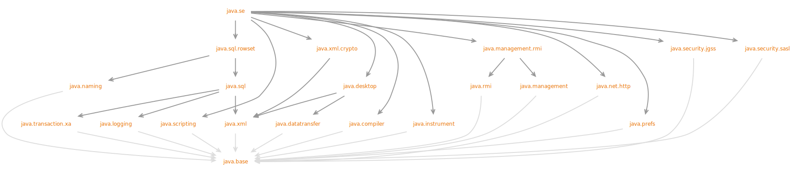

Module java.se
module java.se
Defines the API of the Java SE Platform.
- Optional for the Java SE Platform:
-
Java Native Interface (JNI)
Java Virtual Machine Tool Interface (JVM TI)
Java Debug Wire Protocol (JDWP)
- Module Graph:
- 
- Since:
- 9
{kind=link}
-
Packages
Indirect ExportsFromPackagesjavax.annotation.processing javax.lang.model javax.lang.model.element javax.lang.model.type javax.lang.model.util javax.toolsjava.applet java.awt java.awt.color java.awt.desktop java.awt.dnd java.awt.event java.awt.font java.awt.geom java.awt.im java.awt.im.spi java.awt.image java.awt.image.renderable java.awt.print java.beans java.beans.beancontext javax.accessibility javax.imageio javax.imageio.event javax.imageio.metadata javax.imageio.plugins.bmp javax.imageio.plugins.jpeg javax.imageio.plugins.tiff javax.imageio.spi javax.imageio.stream javax.print javax.print.attribute javax.print.attribute.standard javax.print.event javax.sound javax.sound.midi javax.sound.midi.spi javax.sound.sampled javax.sound.sampled.spi javax.swing javax.swing.border javax.swing.colorchooser javax.swing.event javax.swing.filechooser javax.swing.plaf javax.swing.plaf.basic javax.swing.plaf.metal javax.swing.plaf.multi javax.swing.plaf.nimbus javax.swing.plaf.synth javax.swing.table javax.swing.text javax.swing.text.html javax.swing.text.html.parser javax.swing.text.rtf javax.swing.tree javax.swing.undojava.lang.management javax.management javax.management.loading javax.management.modelmbean javax.management.monitor javax.management.openmbean javax.management.relation javax.management.remote javax.management.timerjavax.naming javax.naming.directory javax.naming.event javax.naming.ldap javax.naming.ldap.spi javax.naming.spijavax.xml javax.xml.catalog javax.xml.datatype javax.xml.namespace javax.xml.parsers javax.xml.stream javax.xml.stream.events javax.xml.stream.util javax.xml.transform javax.xml.transform.dom javax.xml.transform.sax javax.xml.transform.stax javax.xml.transform.stream javax.xml.validation javax.xml.xpath org.w3c.dom org.w3c.dom.bootstrap org.w3c.dom.events org.w3c.dom.ls org.w3c.dom.ranges org.w3c.dom.traversal org.w3c.dom.views org.xml.sax org.xml.sax.ext org.xml.sax.helpers
Indirect ExportsPREVIEWFromPackagesjava.io java.lang java.lang.annotation java.lang.classfile java.lang.classfile.attribute java.lang.classfile.constantpool java.lang.classfile.instruction java.lang.constant java.lang.foreign java.lang.invoke java.lang.module java.lang.ref java.lang.reflect java.lang.runtime java.math java.net java.net.spi java.nio java.nio.channels java.nio.channels.spi java.nio.charset java.nio.charset.spi java.nio.file java.nio.file.attribute java.nio.file.spi java.security java.security.cert java.security.interfaces java.security.spec java.text java.text.spi java.time java.time.chrono java.time.format java.time.temporal java.time.zone java.util java.util.concurrent java.util.concurrent.atomic java.util.concurrent.locks java.util.function java.util.jar java.util.random java.util.regex java.util.spi java.util.stream java.util.zip javax.crypto javax.crypto.interfaces javax.crypto.spec javax.net javax.net.ssl javax.security.auth javax.security.auth.callback javax.security.auth.login javax.security.auth.spi javax.security.auth.x500 javax.security.cert -
Modules
RequiresModifierModuleDescriptiontransitiveDefines the foundational APIs of the Java SE Platform.transitiveDefines the Language Model, Annotation Processing, and Java Compiler APIs.transitiveDefines the API for transferring data between and within applications.transitiveDefines the AWT and Swing user interface toolkits, plus APIs for accessibility, audio, imaging, printing, and JavaBeans.transitiveDefines services that allow agents to instrument programs running on the JVM.transitiveDefines the Java Logging API.transitiveDefines the Java Management Extensions (JMX) API.transitiveDefines the RMI connector for the Java Management Extensions (JMX) Remote API.transitiveDefines the Java Naming and Directory Interface (JNDI) API.transitiveDefines the HTTP Client and WebSocket APIs.transitiveDefines the Preferences API.transitiveDefines the Remote Method Invocation (RMI) API.transitiveDefines the Scripting API.transitiveDefines the Java binding of the IETF Generic Security Services API (GSS-API).transitiveDefines Java support for the IETF Simple Authentication and Security Layer (SASL).transitiveDefines the JDBC API.transitiveDefines the JDBC RowSet API.transitiveDefines an API for supporting distributed transactions in JDBC.transitiveDefines the Java APIs for XML Processing (JAXP).transitiveDefines the API for XML cryptography.
java.basemodule are associated with therequires transitive java.basedirective, which is a preview feature of the Java language.Programs can only use
requires transitive java.basewhen preview features are enabled.Preview features may be removed in a future release, or upgraded to permanent features of the Java Platform.